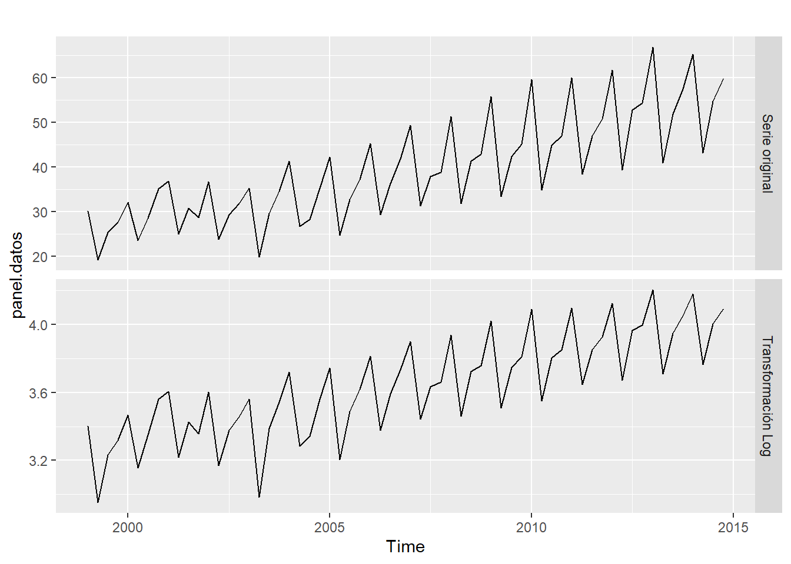
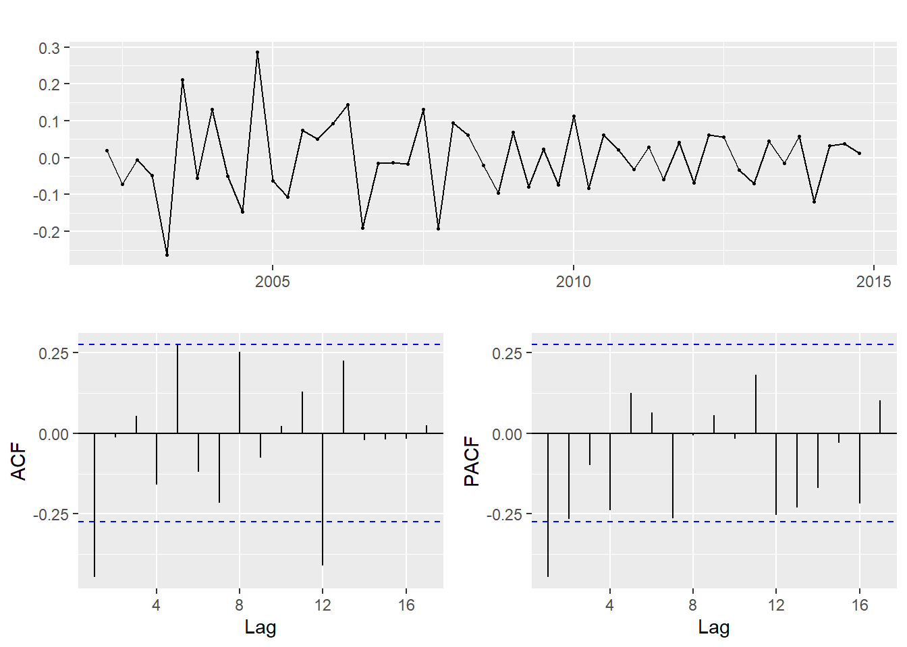
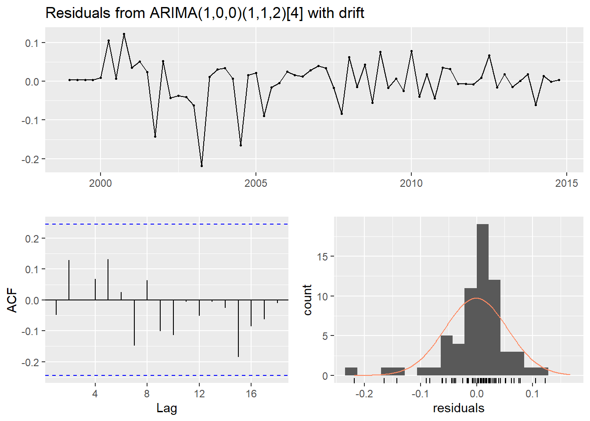

ARIMA
1. Validación de estacionariedad
Cuando se realizó el análisis de serie, se concluyó que ésta tenía componentes de tendencia y estacionalidad. Por tanto, la serie no es estacionaria, por lo que no se puede aplicar la técnica ARIMA sin lograr previamente la estacionariedad. La no existencia de estacionariedad se confirmará con la prueba KPSS.
tseries::kpss.test(datos.training)## Warning in tseries::kpss.test(datos.training): p-value smaller than printed
## p-value##
## KPSS Test for Level Stationarity
##
## data: datos.training
## KPSS Level = 1.6667, Truncation lag parameter = 3, p-value = 0.01La hipótesis nula de esta prueba es la existencia de estacionariedad. En este caso, dado que el p-Value es menor que 0.05, se tiene suficiente evidencia para rechazar la hipótesis nula y, por tanto, se confirma que la serie no es estacionaria.
Del análisis de la serie también se observó que el componete estacional no era uniforme, sino que se acentuaba a medida que avanzaba en el tiempo. Por tanto, para regularizar (uniformizar) la magnitud de la estacionalidad, será necesario aplicar una transformación a la serie.
2. Transformación y diferenciación de la serie
l.datos.training <- log(datos.training)
panel.datos <- cbind("Serie original" = datos.training, "Transformación Log" = l.datos.training)
autoplot(panel.datos, facets = TRUE) ####
El gráfico anterior confirma que se cumplió el objetivo de regularizar la amplitud de la estacionalidad a través de toda la serie.
forecast::ndiffs(l.datos.training)## [1] 1forecast::nsdiffs(l.datos.training)## [1] 1Las funciones ndiffs y nsdiffs nos sugieren diferenciar una vez regualarmente y una vez estacionalmente para lograr estacionariedad.
datos.diferenciados <- diff(diff(l.datos.training,12))
tseries::kpss.test(datos.diferenciados)## Warning in tseries::kpss.test(datos.diferenciados): p-value greater than
## printed p-value##
## KPSS Test for Level Stationarity
##
## data: datos.diferenciados
## KPSS Level = 0.053693, Truncation lag parameter = 3, p-value = 0.1El resultado de la prueba KPSS a la serie diferenciada regular y estacionalmente confirma que se ha conseguido estacionariedad, por lo que se puede proceder a aplicar la técnica ARIMA.
3. Construcción de los modelos
ggtsdisplay(datos.diferenciados)
El análisis de los autocorrelogramas construidos sobre la serie transformada y estacionaria sugiere que se puede partir de un modelo ARIMA(1,1,1)(0,1,0) o ARIMA(1,1,1)(1,1,0) y también es plausible probar un modelo ARIMA(2,1,1)(0,1,0) o ARIMA(2,1,1)(1,1,0) Recuérdese que las diferenciaciones regulares y estacionales no se sacan de la lectura de los autocorrelogramas, sino de la necesidad de haber diferenciado la serie para hacerla estacionaria.
arima1 <- forecast::Arima(l.datos.training, order = c(1,1,1), seasonal = c(0,1,0))
arima1## Series: l.datos.training
## ARIMA(1,1,1)(0,1,0)[4]
##
## Coefficients:
## ar1 ma1
## 0.2802 -1.0000
## s.e. 0.1262 0.0478
##
## sigma^2 estimated as 0.006658: log likelihood=63.39
## AIC=-120.78 AICc=-120.35 BIC=-114.55forecast::checkresiduals(arima1)##
## Ljung-Box test
##
## data: Residuals from ARIMA(1,1,1)(0,1,0)[4]
## Q* = 23.557, df = 6, p-value = 0.0006299
##
## Model df: 2. Total lags used: 8arima2 <- forecast::Arima(l.datos.training, order = c(1,1,1), seasonal = c(1,1,0))
arima2## Series: l.datos.training
## ARIMA(1,1,1)(1,1,0)[4]
##
## Coefficients:
## ar1 ma1 sar1
## 0.4575 -1.0000 -0.5775
## s.e. 0.1235 0.0511 0.1083
##
## sigma^2 estimated as 0.004624: log likelihood=73.65
## AIC=-139.3 AICc=-138.56 BIC=-130.99forecast::checkresiduals(arima2)
##
## Ljung-Box test
##
## data: Residuals from ARIMA(1,1,1)(1,1,0)[4]
## Q* = 8.8538, df = 5, p-value = 0.115
##
## Model df: 3. Total lags used: 8arima3 <- forecast::Arima(l.datos.training, order = c(2,1,1), seasonal = c(0,1,0))
arima3## Series: l.datos.training
## ARIMA(2,1,1)(0,1,0)[4]
##
## Coefficients:
## ar1 ar2 ma1
## 0.2546 0.1058 -1.0000
## s.e. 0.1298 0.1328 0.0468
##
## sigma^2 estimated as 0.006727: log likelihood=63.71
## AIC=-119.42 AICc=-118.67 BIC=-111.11forecast::checkresiduals(arima3)##
## Ljung-Box test
##
## data: Residuals from ARIMA(2,1,1)(0,1,0)[4]
## Q* = 22.866, df = 5, p-value = 0.000358
##
## Model df: 3. Total lags used: 8arima4 <- forecast::Arima(l.datos.training, order = c(2,1,1), seasonal = c(1,1,0))
arima4## Series: l.datos.training
## ARIMA(2,1,1)(1,1,0)[4]
##
## Coefficients:
## ar1 ar2 ma1 sar1
## 0.4199 0.0978 -1.0000 -0.5707
## s.e. 0.1339 0.1367 0.0491 0.1085
##
## sigma^2 estimated as 0.004693: log likelihood=73.91
## AIC=-137.81 AICc=-136.68 BIC=-127.43forecast::checkresiduals(arima4)##
## Ljung-Box test
##
## data: Residuals from ARIMA(2,1,1)(1,1,0)[4]
## Q* = 8.2823, df = 4, p-value = 0.08177
##
## Model df: 4. Total lags used: 8Los modelos arima1 y arima3 no son válidos, pues los residuos no cumplen con ser ruido blanco. Los modelos arima2 y arima4 sí son válidos pues los residuos son ruido blanco. Entre esos dos, el modelo arima2 es ligeramente mejor al tener un AICc = -138.56.
library(forecast)
arima.automatico <- auto.arima(l.datos.training, stepwise = FALSE, approximation = FALSE, trace = FALSE)
arima.automatico## Series: l.datos.training
## ARIMA(1,0,0)(1,1,2)[4] with drift
##
## Coefficients:
## ar1 sar1 sma1 sma2 drift
## 0.3757 -0.8202 -0.1524 -0.7113 0.0129
## s.e. 0.1295 0.3505 0.4210 0.4382 0.0006
##
## sigma^2 estimated as 0.003596: log likelihood=82.46
## AIC=-152.92 AICc=-151.34 BIC=-140.35forecast::checkresiduals(arima.automatico)
##
## Ljung-Box test
##
## data: Residuals from ARIMA(1,0,0)(1,1,2)[4] with drift
## Q* = 4.8335, df = 3, p-value = 0.1844
##
## Model df: 5. Total lags used: 8La recomendación de auto.arima proporciona un modelo mejor al construido por nosotros (AICc = -151.34) y la prueba de los residuos nos confirma que son ruido blanco. Por tanto, el modelo a ocupar sería ARIMA(1,0,0)(1,1,2).
4. Cálculo del error del pronóstico
l.pronostico.arima <- forecast(arima.automatico, h = 4)
l.pronostico.arima$mean## Qtr1 Qtr2 Qtr3 Qtr4
## 2015 4.284767 3.819411 4.052879 4.140149pronostico.arima <- exp(l.pronostico.arima$mean)
pronostico.arima## Qtr1 Qtr2 Qtr3 Qtr4
## 2015 72.58564 45.57734 57.56294 62.81218mae.arima <- Metrics::mae(datos.test, pronostico.arima)
mse.arima <- Metrics::mse(datos.test, pronostico.arima)
errores.arima <- c(mae.arima, mse.arima)
errores.arima <- matrix(errores.arima, 1, 2)
colnames(errores.arima) <- c("MAE", "MSE")
rownames(errores.arima) <- "Mejor ARIMA"
knitr::kable(errores.arima)| MAE | MSE | |
|---|---|---|
| Mejor ARIMA | 2.392268 | 6.989476 |